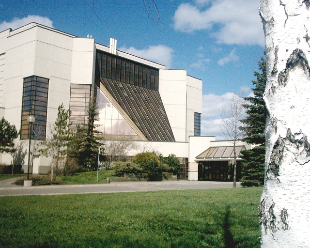

Introduction to Thunder Bay
Chapter 1: History
- Before 1990
European settlement at Thunder Bay began with two French fur trading posts (in 1683 and 1717) which were subsequently abandoned (see Fort William, Ontario). In 1803, the Montreal-based North West Company established Fort William as its mid-continent entrepôt. The fort thrived until 1821 when the North West Company merged with the Hudson's Bay Company, and Fort William was no longer needed.
By the 1850s, the Province of Canada began to take an interest in its western extremity. Discovery of copper in the Keweenaw Peninsula of Michigan had prompted a national demand for mining locations on the Canadian shores of Lake Superior. In 1849, French-speaking Jesuits established the Mission de l'Immaculée-Conception (Mission of the Immaculate Conception) on the Kaministiquia to evangelize the Ojibwe. The Province of Canada negotiated the Robinson Treaty in 1850 with the Ojibwa of Lake Superior. As a result, an Indian reserve was set aside for them south of the Kaministiquia River. In 1859–60, the Department of Crown Lands surveyed two townships (Neebing and Paipoonge) and the Town Plot of Fort William for European-Canadian settlement.
Figure 1: Fort William in 1865
Another settlement developed a few miles to the north of Fort William after construction by the federal Department of Public Works of a road connecting Lake Superior with the Red River Colony. The work was directed by Simon James Dawson (see Port Arthur, Ontario). This public works depot or construction headquarters acquired its first name in May 1870 when Colonel Garnet Wolseley named it Prince Arthur's Landing. It was renamed Port Arthur by the Canadian Pacific Railway (CPR) in May 1883.
The arrival of the CPR in 1875 sparked a long rivalry between the towns, which did not end until their amalgamation in 1970. Until the 1880s, Port Arthur was a much larger and dynamic community. The CPR, in collaboration with the Hudson's Bay Company, preferred east Fort William, located on the lower Kaministiquia River where the fur trade posts were. Provoked by a prolonged tax dispute with Port Arthur and its seizure of a locomotive in 1889, the CPR relocated all its employees and facilities to Fort William. The collapse of silver mining after 1890 undermined the economy of Port Arthur. It had an economic depression, while Fort William thrived.
- 20th Century
In the era of Sir Wilfrid Laurier, Thunder Bay began a period of extraordinary growth, based on improved access to markets via the transcontinental railway and development of the western wheat boom. The CPR double-tracked its Winnipeg–Thunder Bay line. The Canadian Northern Railway established facilities at Port Arthur. The Grand Trunk Pacific Railway began construction of its facilities at the Fort William Mission in 1905, and the federal government began construction of the National Transcontinental Railway. Grain elevator construction boomed as the volume of grain shipped to Europe increased. Both cities incurred debt to grant bonuses to manufacturing industries.
By 1914, the twin cities had modern infrastructures (sewers, potable water supply, street lighting, electric light, etc.) Both Fort William and Port Arthur were proponents of municipal ownership. As early as 1892, Port Arthur built Canada's first municipally-owned electric street railway. Both cities spurned Bell Telephone Company of Canada to establish their own municipally-owned telephone systems in 1902.
The boom came to an end in 1913–1914, aggravated by the outbreak of the First World War. A war-time economy emerged with the making of munitions and shipbuilding. Men from the cities joined the 52nd, 94th, and 141st Battalions of the Canadian Expeditionary Force.
Figure 2: CN Railway Station
Railway employment was hurt when the federal government took over the National Transcontinental Railway and Lake Superior Division from the Grand Trunk in 1915, and the Canadian Northern Railway in 1918. These were amalgamated with other government-owned railways in 1923 to form the Canadian National Railways. The CNR closed many of the Canadian Northern Railway facilities in Port Arthur. It opened the Neebing yards in Neebing Township in 1922. By 1929, the population of the two cities had recovered to pre-war levels.
The forest products industry has played an important role in the Thunder Bay economy from the 1870s. In the 1880s, Herman Finger established the Pigeon River Lumber Company in the area, and also built the Gunflint and Lake Superior Railroad, but he dissolved the lumber company and moved his operations to The Pas by 1919.[12] Logs and lumber were shipped primarily to the United States. In 1917, the first pulp and paper mill was established in Port Arthur. It was followed by a mill at Fort William, in 1920. Eventually there were four mills operating.
- Today
Thunder Bay has become the regional services centre for Northwestern Ontario with most provincial departments represented. Lakehead University, established through the lobbying of local businesspeople and professionals, has proven to be a major asset. Another upper level institution is Confederation College. The same businessmen and professionals who helped attract the university and college were the driving force(s) behind the political amalgamation of Fort William and Port Arthur in 1970.
Chapter 2: Infrastructure
- Transportation
Thunder Bay receives air, rail and shipping traffic due to its prime location along major continental transportation routes. The municipally owned Thunder Bay Transit operates 17 routes across the city's urban area. The city is served by the Thunder Bay International Airport, the fourth busiest airport in Ontario by aircraft movements.[49] The main highway through the city is Highway 11/17, a four-lane highway designated as the Thunder Bay Expressway.
The city is an important railway hub, served by both the Canadian National and Canadian Pacific Railway. Passenger rail service to Thunder Bay ended on 15 January 1990, with the cancellation of Via Rail's southern transcontinental service

Figure 3: Thunderbay Transit
- Harbour
Figure 4: Harbour
Thunder Bay has been a port since the days of the North West Company, which maintained a schooner on Lake Superior. The Port of Thunder Bay is the largest outbound port on the St. Lawrence Seaway System,[51] and the sixth-largest port in Canada.[47] The Thunder Bay Port Authority manages Keefer Terminal, built on a 320,000 square metre site on Lake Superior.
- Medical centres and hospitals
Figure 5: Thunderbay Regional Hospital
Thunder Bay has one major hospital, the Thunder Bay Regional Health Sciences Centre. Other health care services include the St. Joseph's Care Group, which operates long-term care centres such as the Lakehead Psychiatric Hospital, St. Joseph's Hospital, and Hogarth Riverview Manor. The Northern Ontario School of Medicine has a campus at Lakehead University. The city is also home to a variety of smaller medical and dental clinics.
Chapter 3: Culture
- The arts
Thunder Bay is home to a variety of music and performance arts venues. The Thunder Bay Symphony Orchestra, founded in 1960, is the only professional orchestra between Winnipeg and Toronto, and has 31 full-time and up to 30 extra musicians presenting a full range of classical music.[65] New Music North is vital to the contemporary classical music scene in the city by offering intriguing and novel contemporary chamber music concerts.[66]. The largest professional theatre is Magnus Theatre. Founded in 1971, it offers six stage plays each season and is located in the renovated Port Arthur Public School on Red River Road. The Thunder Bay Community Auditorium, which seats 1500, is the primary venue for various types of entertainment.
Figure 6: Thunderbay Museum
Figure 7: Magnus Theatre
The Vox Popular Media Arts Festival, established in 2005, is an independent film festival that features local, national, and international films with the theme of "Films for the People." The festival is held in early October at 314 Bay Street in the historic Finnish Labour Temple.[67] Thunder Bay is also home to the North of Superior Film Association (NOSFA). Established in 1992, the NOSFA features monthly screenings of international and Canadian films at the Cumberland Cinema Centre, and organized the annual Northwest Film Fest film festival that attracts several thousand patrons.[68] Two of Thunder Bay's festivals were included in the 2018 list of the 100 best festival compiled by Festivals and Events Ontario: Teddy Bears Picnic and Live on the Waterfront, the former also being recognized as best promotional campaign and sponsor of the year.

Figure 8: Community Auditorium
The Vox Popular Media Arts Festival, established in 2005, is an independent film festival that features local, national, and international films with the theme of "Films for the People." The festival is held in early October at 314 Bay Street in the historic Finnish Labour Temple.[67] Thunder Bay is also home to the North of Superior Film Association (NOSFA). Established in 1992, the NOSFA features monthly screenings of international and Canadian films at the Cumberland Cinema Centre, and organized the annual Northwest Film Fest film festival that attracts several thousand patrons.[68] Two of Thunder Bay's festivals were included in the 2018 list of the 100 best festival compiled by Festivals and Events Ontario: Teddy Bears Picnic and Live on the Waterfront, the former also being recognized as best promotional campaign and sponsor of the year.

Figure 9: Finnish Labour Temple
- Museums and galleries
The Thunder Bay Art Gallery, which was founded in 1976, specializes in the works of First Nations artists, having a collection of national significance. The Thunder Bay Historical Museum Society, founded in 1908, presents local and traveling exhibitions and houses an impressive collection of artifacts, photographs, paintings, documents and maps in its archives. The City of Thunder bay also houses the Northwestern Ontario Sports Hall of Fame, and the Thunder Bay Military Museum (housed within the O'Kelley Armoury on Park Street).
Thunder Bay has two recognized Federal Heritage buildings on the Register of the Government of Canada Heritage Buildings:
- Ordnance Store (recognized 1997)
- Park Street Armoury (recognized 1994)
Figure 10: Parl Street Armoury
Both are part of HMCS Griffin.
- Places of worship
Thunder Bay has many places of worship supported by people of a variety of faiths, reflecting the cultural diversity of the population. These are:
-
Assumption of the Blessed Virgin Mary Church – Ukrainian Orthodox.
Figure 11: Virgin Mary Church.
-
Redwood Park Church Contemporary member of the Christian Missionary Alliance.
Figure 12: Redwood Park Churuch
-
Shaarey Shomayim Congregation – Jewish Synagogue. This egalitarian community has the only mikvah between Winnipeg and Toronto.
Figure 13: Shaarey Shomayim Congregation